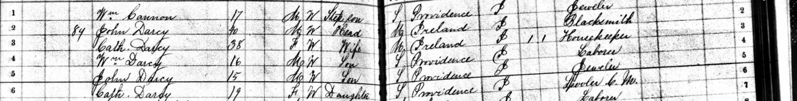

1875 Rhode Island census: John Darcy, blacksmith, and family, Ward 5, Providence
Rhode Island, U.S., State Censuses, 1865–1935: 1875, Providence, Ward 5 (Ancestry collection 4721, records 308712–308716, image 41271_307539-00447)

The original record, as it appears in the register or index.
What this document is
The Rhode Island state census. A census taker went door to door and wrote down every person in each household.
What it says
Census of the City of Providence, June 1, 1875, district 45, Ward 5, volume 15, page 223, household 84. John Darcy, head, 40, male, married, born in Ireland, Irish parentage, blacksmith. Cath. Darcy, wife, 38, married, born in Ireland, housekeeper; marked as unable to read or write. Wm. Darcy, son, 16, born in Providence, laborer. John Darcy, son, 15, born in Providence, jeweler. Cath. Darcy, daughter, 19, born in Providence, spooler in a cotton mill. On the line just above: Wm. Cannon, 17, step son, born in Providence, jeweler (the household number 84 is written on John Darcy’s line, so whether this stepson belongs to the Darcys is not certain from the image). The 15-year-old jeweler John is Constance’s grandfather John Francis Darcy (born December 8, 1859; still a jeweler when he married in 1884 and 1888).
Place
Ward 5, Providence, Rhode Island
How it was read
proven